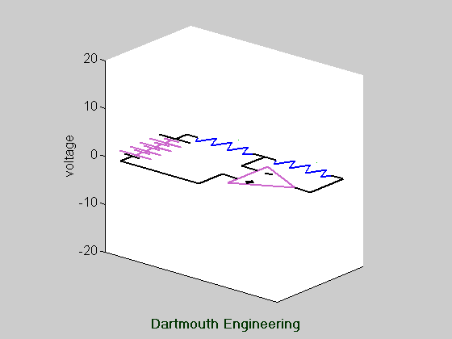

This animation illustrates what happens when an op-amp is driven to the
point that the output "wants" to go beyond the power supply rail, but instead
is limited to a maximum voltage just below the power supply voltage. In
this case, the gain is three and the maximum input is 10 V, so the output
"should" go to 30 V, but it is limited to 15 V. When the output voltage
is clamped to 15 V, the virtual short assumption no longer holds, and the
input voltage is determined the action of the "double-ended voltage divider"
formed by the two resistors.